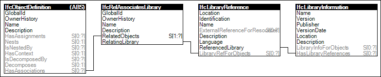

Link to this page
Link to this pageThe concept Object Library describes how object and object types can have associated library entities indicating the source of data such as from a model server or product library, or simply enriching the data with more details. Libraries may be referenced in their entirety from projects or project libraries indicating the master source and version of data. Contents within libraries may be referenced from any object, type object, property, and some resource schema entities within a project or project library.
Figure 16 illustrates an instance diagram.
 |
Figure 16 — Object Library |